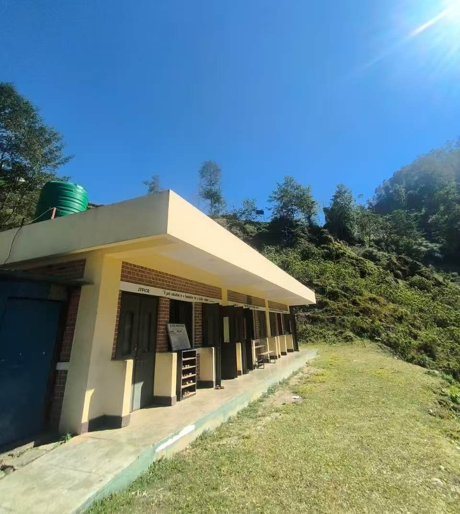
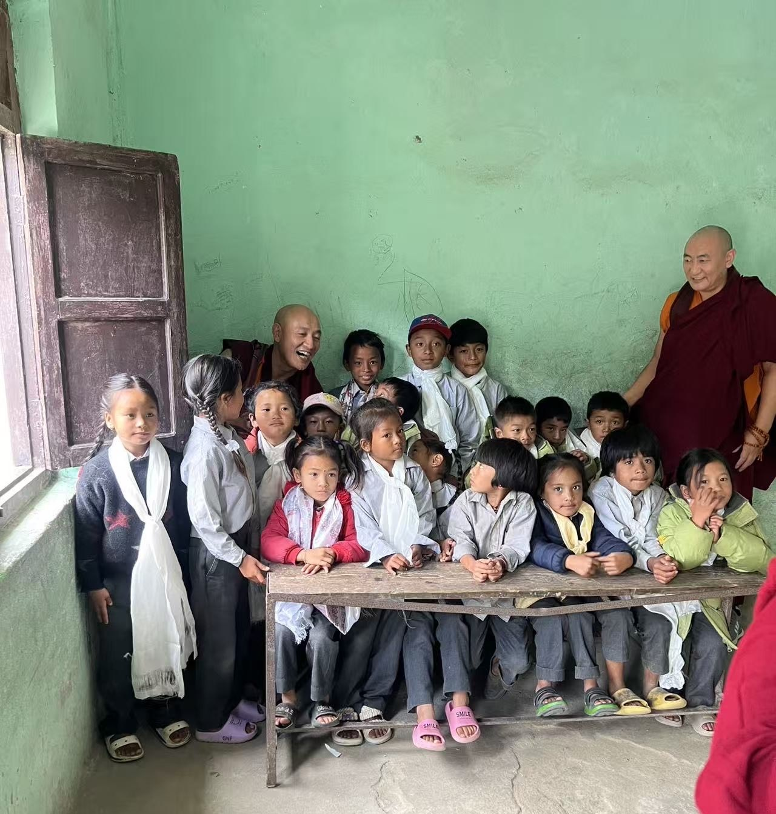
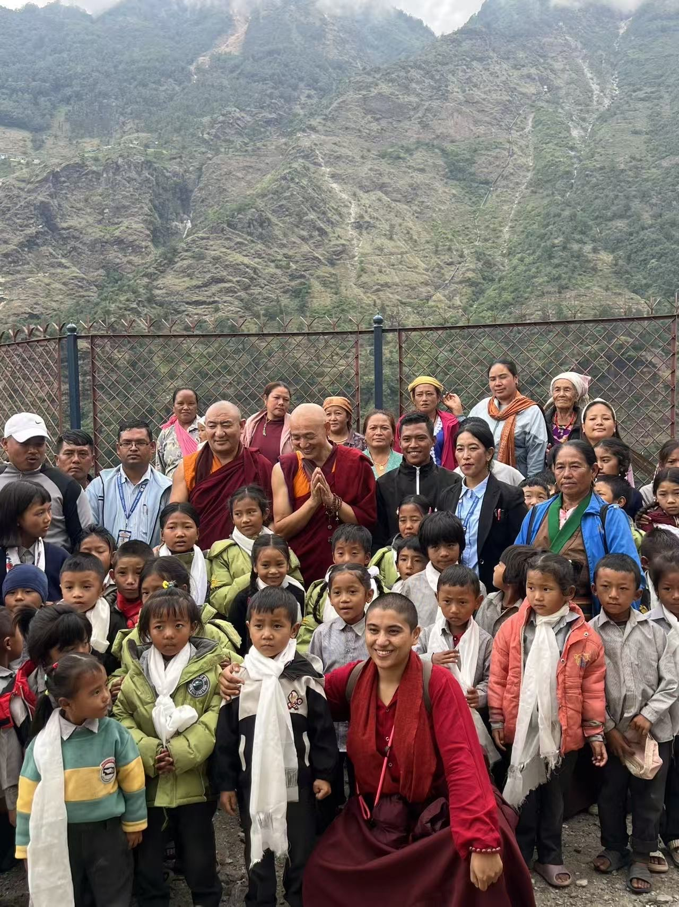
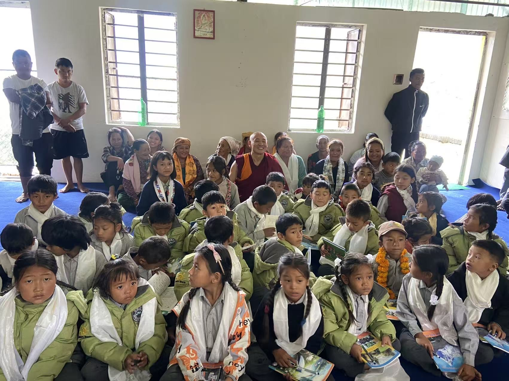
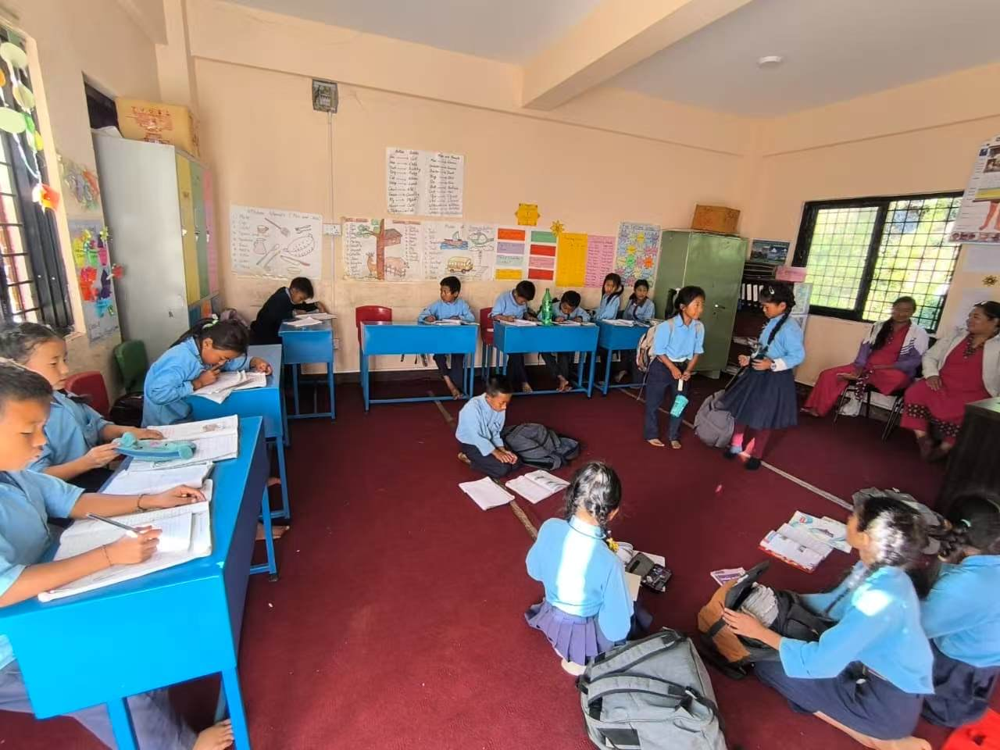
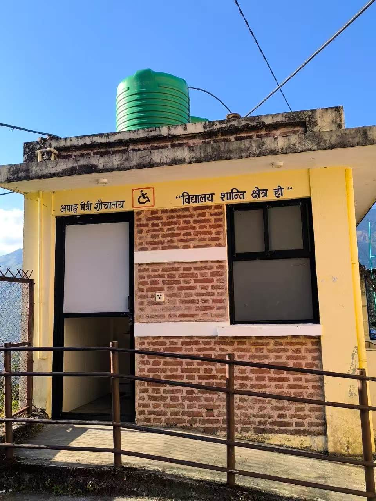
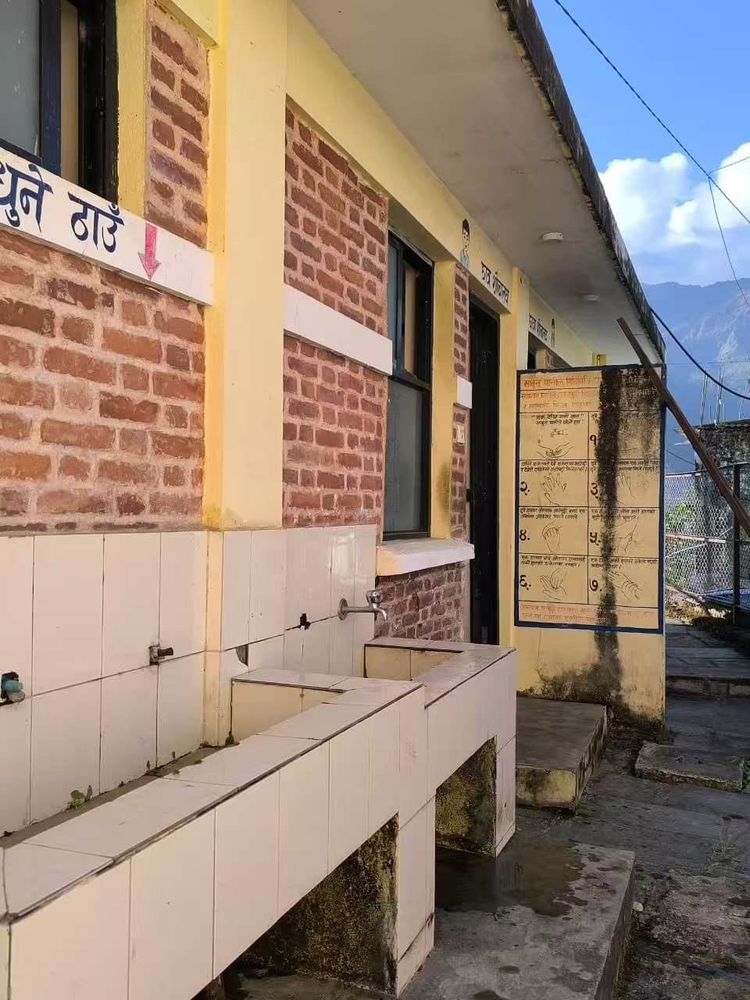
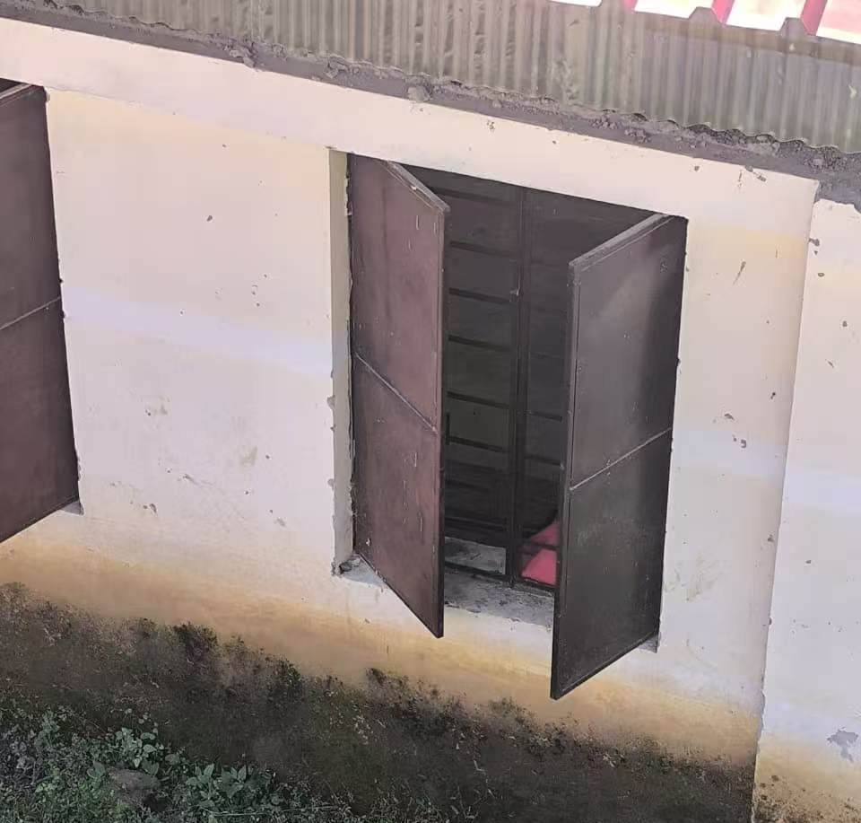
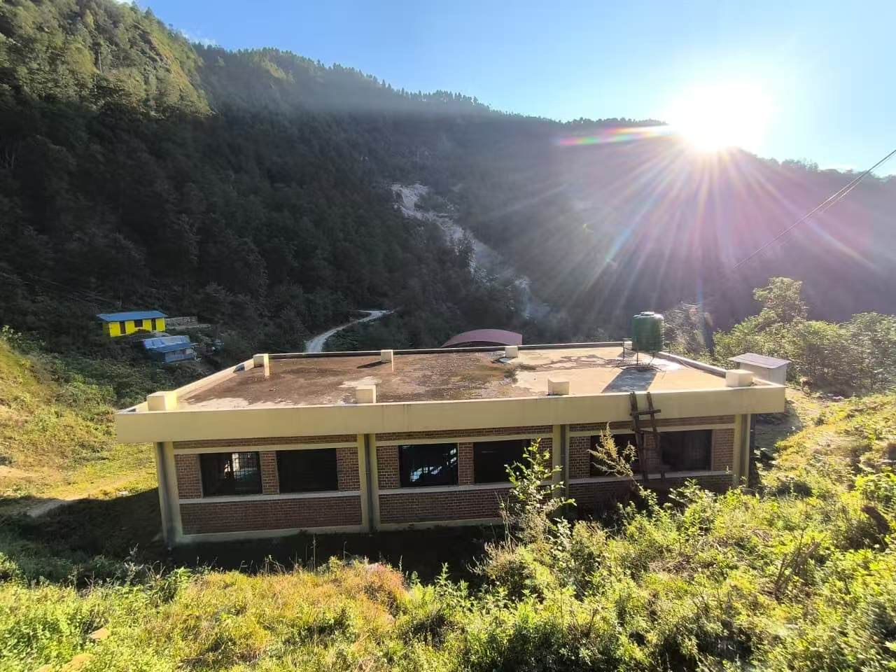

在中尼边境的崇山峻岭之间，尼泊尔一侧的山谷中，坐落着一所朴素却充满希望的小学——Shree Mahadev Base School（石锐·玛哈德芙小学）。这里远离都市喧嚣，云雾缭绕，风景如画，却也因地理隔绝与国家整体经济的滞后，长期面临教育资源匮乏的困境。
尼泊尔虽被誉为“众神之国”，拥有壮丽的喜马拉雅风光与深厚的文化底蕴，但其人均GDP仅为1447美元（2025年数据），位列全球最不发达国家之一。在偏远山区，许多学校缺乏基本教学设施，教师短缺，孩子们求学之路异常艰辛。
正是在这样的背景下，阿度喇嘛——一位经常在尼泊尔闭关修行的藏传佛教僧人——因一次偶然的走访，得知了这所小学的处境。心生悲悯，他没有止步于祈福，而是以实际行动默默承担起责任。他个人出资，全额赞助三位教师前往Shree Mahadev Base School任教，不仅支付他们的工资，还保障其基本生活所需，确保教学能够持续稳定开展。
Shree Mahadev Base School
近日，阿度喇嘛再次踏上这条熟悉的山路，亲自前往学校看望师生。在他到访的那天，孩子们脸上洋溢着灿烂的笑容。简陋的教室里，课桌斑驳，却坐满了专注的眼神。
阿度喇嘛与孩子们围坐在一起，教孩子们念文殊心咒“嗡啊惹巴扎纳德”，给他们种下智慧的种子。
这份善缘，没有喧嚣的宣传，也没有宏大的仪式，却如涓涓细流，润泽着这片贫瘠而纯净的土地。Shree Mahadev Base School因一位喇嘛的牵挂，正悄然改变着一群孩子的命运。
在教室里，课桌不够，孩子们坐在地上做作业。
学校的厕所比较老旧。
水池需要维修。
窗户不能拦住寒风。
或许，真正的慈悲，就是看见苦难后，默默伸出援手，并持续守护那份希望，直到它生根发芽。
后记：
我们是华府功德会，致力于以闻思修行佛法和以善行帮助众生。受阿度喇嘛委托，我们代收善款，专款专用，仅用于改善Shree Mahadev Base School的设施。善念虽小，汇聚成河，足以跨越喜马拉雅的千山万壑。